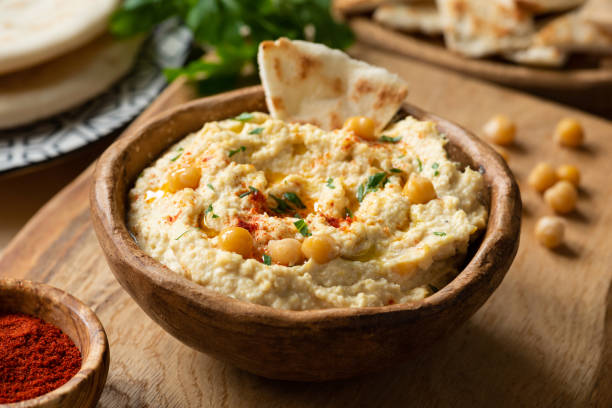

THE magnificent Houmous

Le houmous est idéal pour l'apéritif ou un pique-nique. Cette recette végétarienne
est facile à préparer.
Le houmous est principalement composé de pois chiches,
mixés avec de l'huile de sésame, de l'ail et du jus de citron.
Ingredients:
- 300g pois chiche
- 3 c a s de tahin
- 1/2jus de citron
- 1 c a s de sel
- 2 gousses d'ail
- huile de d'olive
- 1 c a s cumin
- huilde de sesame
Meal prep:
- Mettre les pois chiches égouttés dans un mixeur.
Mixer légèrement en ajoutant un peu d'eau de cuisson.
- Ajouter le tahin, le jus de citron, l'ail, le cumin et le sel,
et continuer de mixer en incorporant l'huile d'olive petit à petit
jusqu'à obtenir une texture homogène et crémeuse
Pour finir:
- On peut éventuellement couvrir l'houmous d'huile de sésame et de cumin.